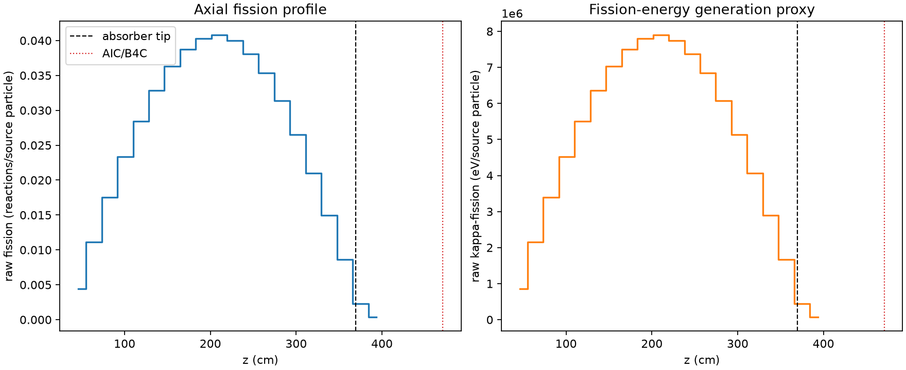
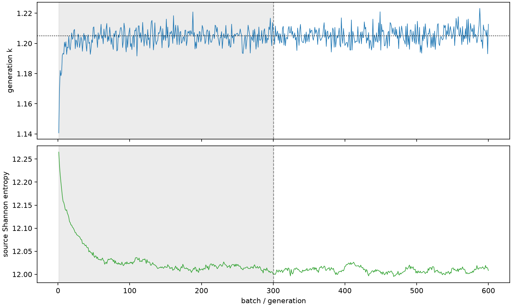

| field | value |
|---|---|
| experiment | V2-STAGE_256_OGRENCI_04-0006 |
| k | 1.2049525992280743 |
| MC standard error | 0.0001854723482801264 |
| seconds | 5746.905486448999 |
| acceptance | not_assessed |
| convergence | review_required |
Completed is output integrity only; physical and statistical review required. Zero tallies do not prove zero production or zero uncertainty.
| diagnostic | value |
|---|---|
| geometric fuel voxels | 5280 |
| zero fission tally voxels | 0 |
| low signal fuel voxels | 0 |
| low signal fission share | 0.0 |
| low signal kappa share | 0.0 |
| important fission share | 0.9500464541981031 |
| previous filter included | 5280 |
| duration estimate s | 1562.5173488400023 |
| actual minus estimate s | 4184.388137608997 |
| fission relative MC error | statistics |
|---|---|
| all_geometric_fuel | {"voxels": 5280, "positive_mean_voxels": 5280, "zero_mean_voxels": 0, "undefined_relative_error_voxels": 0, "median": 0.009850679076630477, "p95": 0.039066795002036026, "maximum": 0.10136971145594778} |
| low_signal | {"voxels": 0, "positive_mean_voxels": 0, "zero_mean_voxels": 0, "undefined_relative_error_voxels": 0, "median": null, "p95": null, "maximum": null} |
| important_95pct | {"voxels": 4010, "positive_mean_voxels": 4010, "zero_mean_voxels": 0, "undefined_relative_error_voxels": 0, "median": 0.009024394282709382, "p95": 0.013292341119061794, "maximum": 0.01768359425066406} |
| outside_previous_filter | {"voxels": 0, "positive_mean_voxels": 0, "zero_mean_voxels": 0, "undefined_relative_error_voxels": 0, "median": null, "p95": null, "maximum": null} |
| kappa_fission relative MC error | statistics |
|---|---|
| all_geometric_fuel | {"voxels": 5280, "positive_mean_voxels": 5280, "zero_mean_voxels": 0, "undefined_relative_error_voxels": 0, "median": 0.009840195896482395, "p95": 0.03901746525321303, "maximum": 0.10125437761194278} |
| low_signal | {"voxels": 0, "positive_mean_voxels": 0, "zero_mean_voxels": 0, "undefined_relative_error_voxels": 0, "median": null, "p95": null, "maximum": null} |
| important_95pct | {"voxels": 4010, "positive_mean_voxels": 4010, "zero_mean_voxels": 0, "undefined_relative_error_voxels": 0, "median": 0.009014058288518536, "p95": 0.013278460439023317, "maximum": 0.017664674174046484} |
| outside_previous_filter | {"voxels": 0, "positive_mean_voxels": 0, "zero_mean_voxels": 0, "undefined_relative_error_voxels": 0, "median": null, "p95": null, "maximum": null} |
| axial bin | fission share | kappa-fission share |
|---|---|---|
| 1 | 0.008919879702135291 | 0.00892030623822064 |
| 2 | 0.022665709912199263 | 0.02266560123490859 |
| 3 | 0.035591851738515604 | 0.035591721051045765 |
| 4 | 0.04737046152773961 | 0.04737023719871663 |
| 5 | 0.05778251113890295 | 0.05778234846021089 |
| 6 | 0.0667199636786055 | 0.0667198598134606 |
| 7 | 0.07371919665576852 | 0.07371897964783848 |
| 8 | 0.07876513054855168 | 0.0787648425926842 |
| 9 | 0.08180443169983256 | 0.0818044490313833 |
| 10 | 0.08284175764104668 | 0.08284158813027236 |
| 11 | 0.08118968282376395 | 0.08118969358266968 |
| 12 | 0.07736014241619744 | 0.07736014976985987 |
| 13 | 0.07189302945987631 | 0.0718929517116453 |
| 14 | 0.0637060676971857 | 0.06370603176870356 |
| 15 | 0.0539233608810574 | 0.05392329041222426 |
| 16 | 0.04258099142511864 | 0.04258083043367887 |
| 17 | 0.03032934304302493 | 0.03032922518014947 |
| 18 | 0.0174737597555234 | 0.017473708495383825 |
| 19 | 0.004590329722385804 | 0.004591427023222519 |
| 20 | 0.0007723985325687677 | 0.0007727582237211998 |
Histories include the inactive-to-active transition at batch 300. kappa-fission approximates fission energy production, not total heat deposition.

